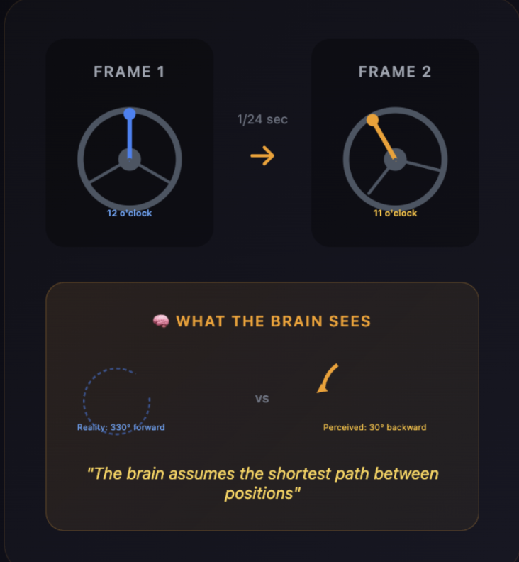
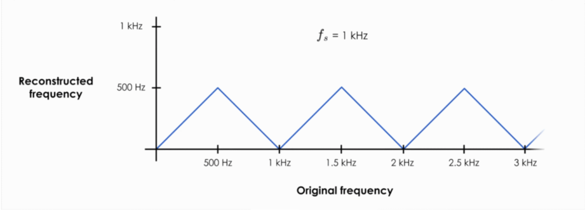
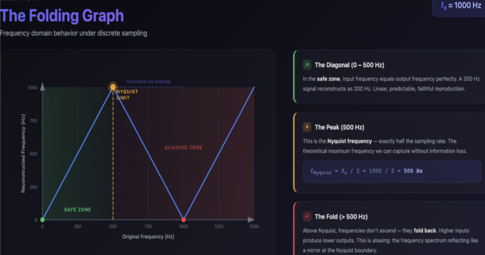
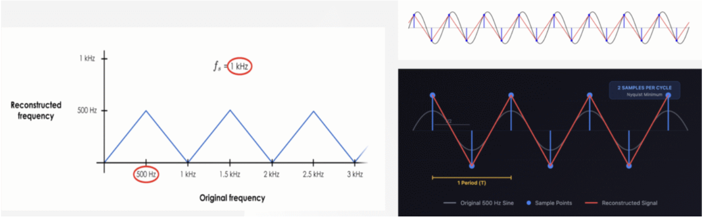
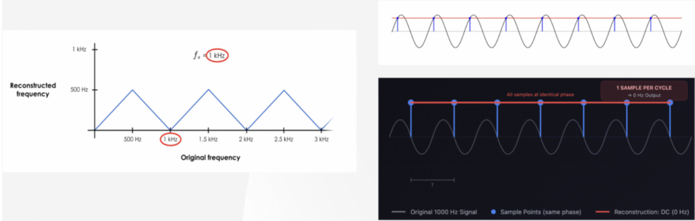
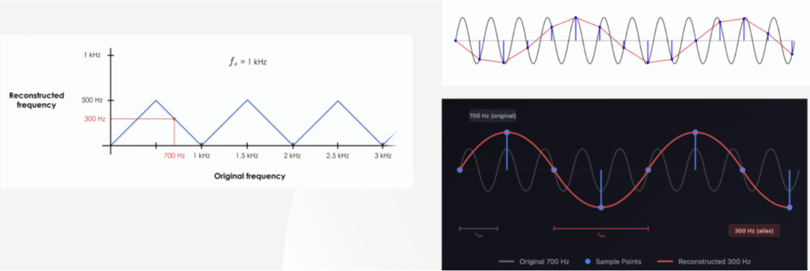
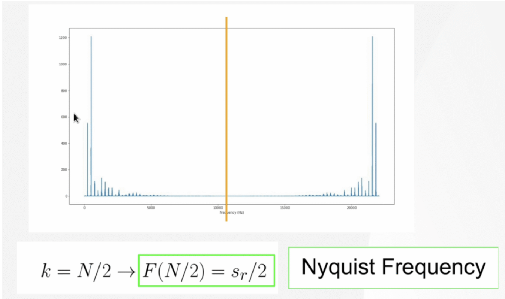
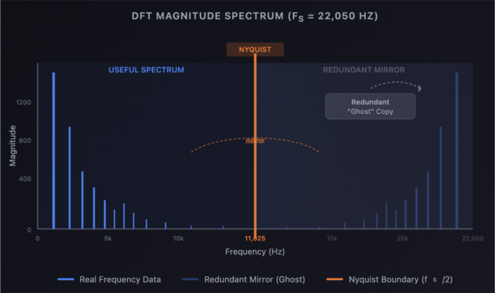

Why This Article Exists
Ever wondered why spinning wheels sometimes look like they're going backward in movies? Or why a cheap digital recording sounds harsh and metallic compared to the original sound? Both of these share the same root cause - aliasing. It's one of the most fundamental concepts in signal processing, and yet most of the explanations out there either oversimplify it ("just use 44.1 kHz and you'll be fine") or dump a wall of math without building any intuition behind this.
This article aims at covering aliasing from scratch : starting from the simplest visual analogy that anyone can understand, and then going deep into the math of how frequencies fold, why the Nyquist limit exists, how the DFT mirrors work, and what happens when you break the rules. If you work with audio in AI/ML pipelines (think MFCC preprocessing, SyncNet, speech models), there's a dedicated section towards the end connecting aliasing directly to the workflows. But first, let us build the foundation for understanding aliasing properly, believe me it's really easy to build the intuition behind this, the math used would just be a tool to justify the intuition.
I've spent a good amount of time working hands on with audio data preprocessing and model training, mostly dealing with speech data. So while this article builds everything from first principles, a lot of the intuition and practical observations here come from actually running into these things in real pipelines, not just textbook reading
This is going to be a detailed read, and it will give you a full picture of what aliasing is with first principles thinking, practical application where we see the effects of aliasing and there will also be deep math behind for those who gets turned on by seeing equations, Haha!!, and also with a promise that there will be no AI slop here, to generate all the media/images that is used for this post, Gemini Nano Banana Pro was used.
What is Aliasing?
Aliasing is a specific type of distortion that happens when we convert continuous analog signals into digital ones. It occurs when we don't sample fast enough to capture the signal's true behaviour. The word "Alias" literally means a false name or identity - in audio, a high frequency takes on the false identity of a lower frequency because it wasn't captured fast enough

This is not just a blurry or noisy sound. It actually creates completely new, fake tones that were never part of the original recording. For example, a very high sound like 15 kHz can show up as a lower sound like 5 kHz. A bright cymbal shimmer can turn into a dull, muddy rumble. In simple words the high frequency hides itself and appears as a lower frequency - that's why it is called an alias, because the sound is pretending to be something else
The high frequency hides itself and appears as a lower frequency - that's why it is called an alias, because the sound is pretending to be something else.
Understanding why this happens requires understanding how digital systems capture sound in the first place, so let's start with the most intuitive visual analogy which is the famous Wagon Wheel Effect.
The Wagon Wheel Effect: Why Fast Spinning Wheels Appear to Rotate Backward on Film
Before we touch any math or audio waveforms, let's understand aliasing visually through the wagon wheel effect, something most of us have seen in movies.

Imagine a car wheel spinning forward very fast. A camera records this at a fixed speed, say 24 frames per second. Between two consecutive frames, the wheel spins almost a full circle moving from the 12 o'clock position all the way around to 11 o'clock (330° of rotation forward).
Now here's the key insight : our brain (and the math) is lazy. It assumes the object took the shortest path. Instead of seeing the long journey forward (330° clockwise), we perceive the spoke moving slightly backward from 12 to 11 (just 30° counter clockwise).
The forward spinning wheel appears to rotate backward. This backward motion is the alias of the true motion : a false representation caused by insufficient sampling (the camera's frame rate was too slow to capture the actual speed of rotation).
Just as a camera must shoot fast enough to capture a spinning wheel correctly, a digital audio system must sample fast enough to capture high frequency sounds. When it doesn't, those frequencies take on a false identity - they alias.
Aliasing in Sound: A Foundational Principle
While the wagon wheel effect is just a cool visual trick in movies, in audio it is a disaster.
The fast spinning wheel corresponds to a high frequency sound wave, and the camera's frame rate corresponds to the audio sampling rate. The analogy maps perfectly:
High frequencies are essential for clarity in audio - like the "s" and "t" sounds in speech, or the shimmer of cymbals. If we don't sample fast enough, these crisp sounds turn into low frequency noise artifacts. A cymbal crash contains frequencies up to 20,000 Hz. If sampled at only 30,000 Hz, frequencies above 15,000 Hz will alias down - turning bright, shimmering highs into muddy, unnatural rumbles.
This is why CD audio uses 44,100 Hz as its sampling rate - to safely capture frequencies up to 22,050 Hz, which covers the entire range of human hearing with some headroom
For those who are unaware of the Nyquist theorem, some words or lines may not make sense right now, and that's completely fine. Once you read the article till the end, everything will start to make sense. The Nyquist theorem is also explained later in connection with aliasing.
The Solution: The Nyquist Shannon Sampling Theorem
The rule to prevent aliasing is defined by the Nyquist Shannon Sampling Theorem, and it's non negotiable in digital audio.
The sampling frequency (f_s) must be greater than twice the highest frequency present in the signal (f_max).
The "Why" behind the 2x rule: A sound wave is a cycle with a positive part (peak) and a negative part (trough). To define this cycle without ambiguity, you need to capture at least two samples per cycle - one to record the "up" motion and one to record the "down" motion. Anything less than 2 samples per cycle, and the system cannot distinguish between different frequencies - they become aliases of each other.
The frequency at exactly half the sampling rate is called the Nyquist frequency : it's the theoretical maximum frequency we can capture without information loss.
Any frequency above the Nyquist limit will fold back and appear as a lower frequency - that's aliasing
Undersampling - The 20 kHz / 15 kHz Example
Let's see what happens when the Nyquist rule is broken with a concrete numerical example.
Setup: Imagine a high frequency sound wave at 15,000 Hz (15 kHz). We sample it with a sampling rate of 20,000 Hz (20 kHz).
The Nyquist frequency here is 20,000 / 2 = 10,000 Hz. Our signal at 15 kHz is above this limit : we're already violating the theorem.
The sampling frequency is 20,000 / 15,000 = ~1.33x the signal's frequency. This is faster than the signal, but less than the required 2x rate. Taking only 1.33 samples per cycle provides insufficient data. The system tries to reconstruct the wave by connecting these awkwardly spaced dots using the simplest, "shortest path" possible - just like the brain does with the wagon wheel.
The Result: The original 15 kHz tone is lost. Instead, it is incorrectly recorded as a new, false 5 kHz tone.
This 5 kHz tone is the alias - an incorrect frequency that was never in the original sound. It's completely fake, and once it's there, it's permanent. You cannot filter it out because it now lives at a legitimate frequency.
That 5 kHz alias is indistinguishable from a real 5 kHz tone.
Correct Sampling - The >30 kHz Example
Now let's see how the Nyquist theorem solves the problem.
Setup: Same 15 kHz sound wave. To obey the Nyquist theorem, we must sample at a rate greater than 2 × 15 kHz = 30 kHz. Let's use the CD standard of 44,100 Hz (44.1 kHz).
A sampling rate of 44.1 kHz provides ~2.94 samples per cycle (44,100 / 15,000), which is well above the 2x minimum. This is more than enough information to capture the wave's defining characteristics - its peak, trough, and the shape in between.
The Result: The ambiguity is eliminated. There is only one unique 15 kHz wave that can fit through the captured sample points. The "shortest path" now correctly represents the original wave, and an accurate digital recording is made. No alias, no distortion, no fake frequencies.
Understanding the Folding Graph
Now that we have the intuition, let's understand the most important visualisation in aliasing - the folding graph, that will start unfolding the mathematical understanding behind aliasing. This graph shows exactly what happens to every possible input frequency when it gets sampled at a given sampling rate.
What Does This Graph Mean?

Let's take a concrete example where our sampling rate f_s = 1,000 Hz (1 kHz). This means our Nyquist frequency is f_s / 2 = 500 Hz.
The true frequency of the analog signal in the real world - before any sampling occurs. This is what the sound or signal actually is.
The frequency that appears after sampling : what the digital system thinks the signal is.
In a perfect world, the reconstructed frequency would always equal the original frequency : we'd just see a straight diagonal line going up forever. But that's not what happens.
The Folding Graph: Safe Zone vs Aliasing Zone

This graph tells the whole story of aliasing in one picture. Let's break it down:
The Diagonal (0 - 500 Hz) The Safe Zone: In the safe zone, input frequency equals output frequency perfectly. A 200 Hz signal reconstructs as 200 Hz, linear, predictable and faithful reproduction. Everything below the Nyquist frequency is captured correctly.
The Peak (500 Hz) The Nyquist Frequency: This is exactly half the sampling rate. The theoretical maximum frequency we can capture without information loss.
The Fold (> 500 Hz) The Aliasing Zone: This is where things break. Above the Nyquist frequency, frequencies don't continue ascending - they fold back. Higher inputs produce lower outputs. This is aliasing: the frequency spectrum reflecting like a mirror at the Nyquist boundary, this mirroring concept is important and have further application in plotting frequency domain graphs
The graph forms a zigzag pattern. The frequency goes up linearly to 500 Hz, then folds back down to 0, then back up to 500, and so on. Every frequency above Nyquist maps to some frequency below Nyquist - creating a false identity.
Walking Through the Cases on the Folding Graph
Let's walk through three specific cases on the folding graph with f_s = 1,000 Hz it will give crystal clear clarity.
Case 1: Capturing f = 500 Hz (At the Nyquist Limit)

At exactly f_s / 2, we capture one sample at each peak and one at each trough - the bare minimum to identify that an oscillation exists. This is what "minimum viable sampling" looks like.
The reconstruction forms a triangle wave, not a sine wave. We lose waveform fidelity, but critically we preserve the fundamental frequency. The system knows a 500 Hz signal is there, but it can't capture its exact shape. This is the edge case - technically the signal is captured, but just barely (extreme case)
On the folding graph, 500 Hz sits right at the peak. This is the Nyquist boundary - one foot in the safe zone, one foot in the aliasing zone.
Case 2: Capturing f = 1,000 Hz (Signal Equals Sampling Rate)

When input frequency equals the sampling rate, we take exactly one sample per wave cycle. Each sample captures the same phase position, making the signal appear stationary - a flat line at DC (0 Hz).
On the folding graph, trace 1,000 Hz on the x-axis: it maps to 0 Hz on the y-axis. The original 1 kHz signal has been completely destroyed - it doesn't just alias to a wrong frequency, it disappears entirely into silence.
On the small triangle inset in the diagram, the red dot at 1 kHz on the x-axis sits right at the bottom (0 Hz) of the folding graph. The signal has been folded all the way back to zero.
Case 3: Capturing f = 700 Hz (The Mirror Equation)

This is the case where proper false signal we will see. 700 Hz is above our Nyquist frequency of 500 Hz, so aliasing occurs.
We can also think about it as: 700 Hz is 200 Hz above Nyquist (500 Hz), so the alias appears 200 Hz below.
The diagram on the right shows this beautifully : the original 700 Hz signal (in gray/blue) is sampled, and the reconstructed signal (in red) comes out as 300 Hz. The sample points are identical for both frequencies, the digital system cannot distinguish between them.
Any frequency and its alias always sum to the sampling rate. They are equidistant from the Nyquist frequency (500 Hz) - one sits 200 Hz above, the other 200 Hz below. The Nyquist frequency acts as the axis of symmetry, like a mirror.
Now from here in this article is the point where we dive deep in aliasing and its application in Fourier Transforms, people who knows the basics of DSP theory and Fourier Transform will have an edge in understanding the application of aliasing in frequency domain or Fourier Transform (In short Fourier Transform is the mathematical tool used to convert raw audio in time domain to frequency domain)
Real World Sound: It's Never a Single Frequency
Everything we've discussed so far uses clean, single frequency sine waves. But real world audio is never that simple.
According to Fourier's theorem, any complex sound can be understood as a combination of many sine waves, each with a different frequency and amplitude. A sound from an instrument, like a piano, is composed of:
This is the lowest frequency that determines the pitch of the note we hear (for example, ~261 Hz for Middle C).
These are a series of higher frequency sine waves that are multiples of the fundamental. The unique combination and loudness of these harmonics create the sound's distinctive timbre - this is why a violin playing Middle C sounds completely different from a flute playing the same note.
The Nyquist Theorem's Focus: The Highest Frequency
To accurately record a complex sound, we must capture not just its fundamental pitch but all the high frequency harmonics that give it richness and detail.
Therefore, the Nyquist theorem's rule is applied to the single highest frequency present in the sound mixture, not the fundamental.
Example: A violin plays a note with a fundamental of 1,000 Hz. Its sound includes crucial harmonics that extend all the way up to 18,000 Hz. To capture the full, bright sound of the violin, the sampling rate must be: f_sampling > 2×18,000 Hz i.e f_sampling >36,000 Hz.
A standard rate like 44,100 Hz is used to safely capture the entire audible frequency range. If we chose a sampling rate that only satisfied the fundamental (say, anything above 2,000 Hz) all those harmonics above the Nyquist frequency would fold back and create aliases - the violin would sound distorted, metallic, and unnatural.
Oversampling Lower Frequencies for High Fidelity
A key consequence of this highest frequency rule is that all lower frequencies in the signal are massively oversampled, leading to an extremely high quality digital recording.
If a sampling rate is fast enough to correctly capture the most rapid vibration, it is automatically more than sufficient for all slower vibrations.
This significant oversampling of the fundamental and midrange frequencies ensures they are captured with exceptional precision, resulting in a robust digital audio signal. The lower the frequency relative to the sampling rate, the more faithfully it's captured.
The DFT Mirror and Redundancy: Why Half the Spectrum is a Ghost
Now let's go deeper and understand aliasing from the perspective of the Discrete Fourier Transform (DFT), which is how we actually analyse frequencies in a digital signal. This section is important for anyone working with FFTs (Fast Fourier Transforms) in practice - whether in audio processing, speech analysis, or ML pipelines.


The Discrete Fourier Transform produces N complex coefficients for N input samples. Due to the math of complex exponentials, the output is always conjugate symmetric for real-valued signals. This means:
Where X[k] is the DFT coefficient at bin k, and X*[N-k] is the complex conjugate of the coefficient at bin (N-k).
What this means practically
The Nyquist frequency (exactly f_s / 2) sits at bin index k = N/2. This is the axis of symmetry (the mirror). k = N/2 → F(N/2) = sr/2 = Nyquist Frequency.
Bins from N/2+1 to N−1 contain no new information. They're just reflections of bins 1 to N/2−1. The ghost half is a mathematical artifact, not real frequency content.
In the DFT magnitude spectrum diagram above (with f_s = 22,050 Hz as shown), everything to the right of the Nyquist boundary (11,025 Hz) is the redundant mirror : a ghost copy that adds no information. The frequency content is real and useful only up to the Nyquist frequency.
In practice, we discard the right half. FFT libraries often provide an rfft (real FFT) function that returns only bins 0 to N/2, halving memory and computation. When you call np.fft.rfft() in Python or any equivalent, this is exactly what's happening - it gives you the useful half and throws away the ghost.
This is also why when you see frequency plots of audio signals, they typically only go up to the Nyquist frequency - because everything above it is either a mirror of what's below (in the DFT output) or an alias (if the signal wasn't properly band limited before sampling).
Also I would like to say here : From my personal experience working with speech data for model training - I've mostly dealt with human talking/speech audio, and honestly, I didn't feel much of a difference between 16 kHz, 24 kHz, and 48 kHz. Yes, as you increase the sampling rate, the speech does become a bit more enhanced, but it's minute - enough to spot a tiny difference if you're listening carefully, but nothing dramatic. For speech, 16 kHz captures pretty much everything that matters.
Aliasing in AI/ML Audio Pipelines
If you work with audio in machine learning - whether it's speech recognition, speaker verification, lip sync models like SyncNet and Wav2Lip, or any audio classification task - aliasing is not just a theoretical concept. It directly affects the quality of features you extract and therefore the performance of your model.
MFCC Preprocessing and Aliasing
MFCCs (Mel-Frequency Cepstral Coefficients) are the most common audio features used in ML pipelines. The MFCC pipeline works like this:
The FFT step is where aliasing matters. If your input audio was recorded at a sampling rate that's too low for its frequency content, or if you downsample the audio before feature extraction without applying an anti aliasing filter first, those aliased frequencies will show up in your FFT output and pollute your Mel filter bank energies. The MFCC features you extract will contain phantom frequency information that wasn't in the original sound - and your model will learn from noise.
SyncNet and Audio Preprocessing
In the SyncNet article that I've written about before, the audio stream expects 0.2 seconds of audio which goes through preprocessing to produce a 13 × 20 MFCC matrix (13 DCT coefficients × 20 time steps at 100 Hz MFCC frequency). This matrix is the input to the audio CNN stream.
If the audio fed into SyncNet's pipeline has aliasing effects - say, because someone downsampled from 48 kHz to 16 kHz without proper filtering - those things will be embedded in the MFCC features. The audio CNN will then learn correlations between these phantom frequencies and the video stream, degrading the model's ability to accurately measure audio-visual sync.
On things I have worked in audio, I would like to write some practical takeaways below
Practical Takeaway for ML Engineers
Whenever you're working with audio in an ML pipeline:
Libraries like librosa handle this internally when you use librosa.resample(), but if you're doing manual downsampling (like taking every Nth sample), you're introducing aliasing.
If you're working at 16 kHz (common for speech), your Nyquist is 8 kHz - any speech content above 8 kHz is lost or aliased.
44.1 kHz recording downsampled properly to 16 kHz will give cleaner features than a 44.1 kHz recording processed directly - because the model doesn't need information above 8 kHz for most speech tasks, and the extra frequency bins just add noise to the feature space
The Mirror That Breaks Everything
Aliasing is one of those concepts that sits at the intersection of elegance and disaster. The math behind it is beautifully simple -frequencies fold around the Nyquist boundary like reflections in a mirror, and any frequency above half the sampling rate takes on the false identity of a lower frequency. But the consequences of not understanding it are harsh - permanent distortion, phantom frequencies, and corrupted signals that no amount of post-processing can fix.
We covered the full picture in this article: from the wagon wheel effect as a visual anchor, to the Nyquist Shannon theorem that defines the sampling rule, to the folding graph that shows exactly how every frequency maps after sampling, to the DFT mirror that explains the symmetry from a mathematical perspective. The thread connecting all of these is the same :
Sampling is a lossy process if done incorrectly, and aliasing is the specific way in which that information loss manifests.
Whether you're recording music, processing speech for an ML model, or building audio-visual sync systems - understanding aliasing at this depth gives you the foundation to make informed decisions about sampling rates, filter design, and feature extraction that will directly impact the quality of your output.
I would like to thank Google Nano banana pro to help me create those creative arts that I have used in the articles, and grammarly.
In the end, Thanks for the patience, feel free to ping to ask anything related here :